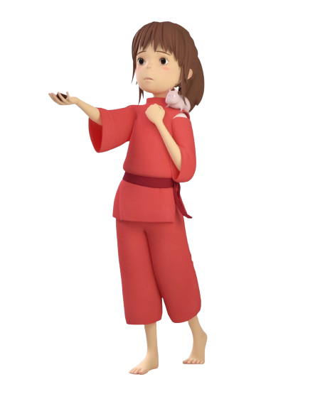
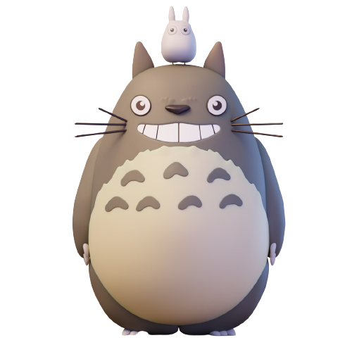

Chihiro
Chihiro Ogino is the main character of the film. Fearful and apathetic at first, this 10-year-old girl will grow and gain confidence to face various adventures in the spiritual world where she is precipitated. She thus manages to purify the stinking spirit, to humanize the Faceless without giving in to his attempts at corruption, and to help his friend Haku and his parents.
NicknameSen
Nothing that happens is ever forgotten, even if you can't remember it
Totoro
Totoro appears to be a legendary forest spirit resembling a big bear, a sort of cross between a cat and a panda. He meets Mei and his sister Satsuki and helps them grow the seeds he gave them in exchange for an umbrella on a rainy day; he also helps Satsuki to find his little sister who had lost her.
NicknameChô Totoro
Try Laughing. Then Whatever Scares You Will Go Away.